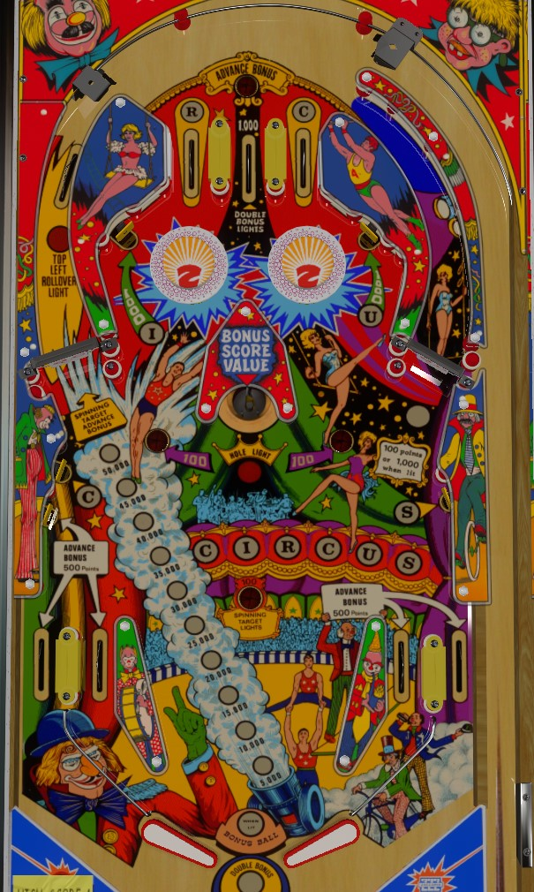

Not to be confused with many other classic pinball games simply titled Circus, most notably by Bally (1973) or Gottlieb (1980), or Cirqus Voltaire (Bally Williams, DMD, 1997).
On the plunge, aim for the center top lane to immediately light double bonus. The top rollover button and every 5-6 spins of the left spinner advance the bonus, take advantage of these (using the right spinner to get back to the top of the table if necessary) to max out the base bonus at 50,000. The center saucer collects and resets the bonus, but when bonus is maxed, the rollover switch in the left spinner lane is lit; on replay settings, this gives an extra ball, so collect it once then shoot the center hole to collect your bonus and repeat, but on add-a-ball settings, maxing the bonus lights the spinner lane for a repeatable 100,000 points.
Bonus is advanced by the top rollover button, any in/out lane, the lower-left-most standup target, and every 5-6 spins of the left spinner. Each bonus advance is worth 5,000 points toward the end of ball bonus instead of the more standard 1,000.
The center saucer will score the current end of ball bonus at any time, including doubling the bonus, which is lit by making the center top lane. Once the bonus is collected, it is reset back to 5,000 points, but double bonus is kept intact if it had been earned.
Any time the base bonus is maxed at 50,000 points, the rollover switch behind the left spinner is lit. Activating this switch when lit scores a "bonus ball" (extra ball) on replay settings, or 100,000 points on add-a-ball settings. The rollover switch does not unlight once its award is collected, so if you're playing in add-a-ball mode, the left spinner lane is now worth a repeatable 100,000 points until the ball drains or the center saucer is made, which is without question the best route to points in the game. If you're playing on replay settings, the rollover switch stays lit after earning the extra ball, but there's a maximum of 1 extra ball per ball in play, so once you have the extra ball, shoot the saucer to collect your bonus each time you max it out.
Six targets or lanes around the table award letters in Circus. The lower left target closest to the spinner awards the first C; targets near the bumpers award I and U; the left and right top lanes award the R and second C; and the lower right standup target awards the S. Make a lit target or rollover lane to collect that letter and unlight it. Once all 6 letters have been collected to spell Circus, the center saucer will be lit red. Making the center saucer when lit scores a free game (in replay mode) or a bonus ball (in add-a-ball mode), then resets the Circus letters sequence so they can be collected again.
Circus has a conventional in/out lane setup. All in/out lanes score 500 points and a bonus advance.
The in lane rail is angled much more sharply than a lowered flipper, so expect a ball coming through the in lane to reach the flipper with speed or take a funny bounce when it hits the flippers surface. The use of a thicker post above the in lane rail to separate the in and out lanes means shatz/alley passes can be used as a flipper transfer technique, but cannot be used to reliably trigger the bonus advance switches on the in lanes. The flipper gap is quite wide, so shotmaking and ball control techniques need quite a bit of thought to keep a ball going for a long time.
See Bonus features above. There is no way to carry the base bonus or multiplier from one ball to the next, and double bonus is never given for free.